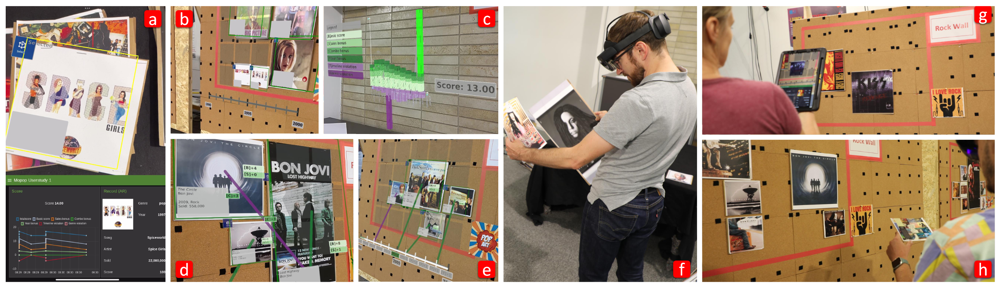

Exploring Augmented Reality for Situated Analytics with Many Movable Physical Referents

Authors. Aimée Sousa Calepso, Philipp Fleck, Dieter Schmalstieg, Michael Sedlmair
Venue. VRST (2023)
Abstract. Situated analytics (SitA) uses visualization in the context of physical referents, typically by using augmented reality (AR). We want to pave the way toward studying SitA in more suitable and realistic settings. Toward this goal, we contribute a testbed to evaluate SitA based on a scenario in which participants play the role of a museum curator and need to organize an exhibition of music artifacts. We conducted two experiments: First, we evaluated an AR headset interface and the testbed itself in an exploratory manner. Second, we compared the AR headset to a tablet interface. We summarize the lessons learned as guidance for designing and evaluating SitA.